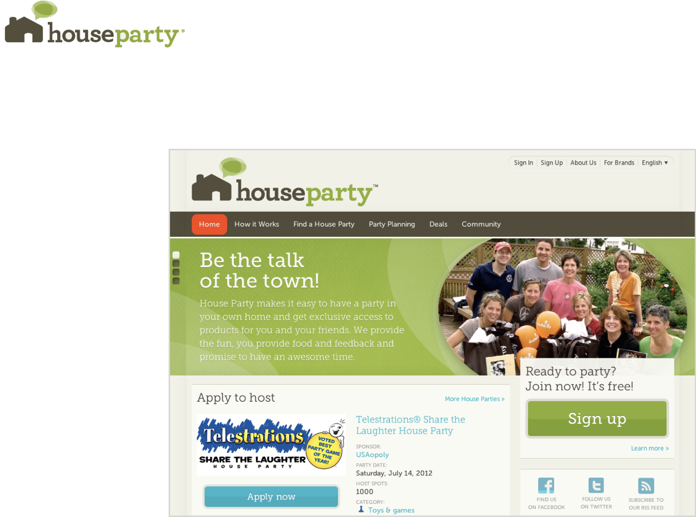
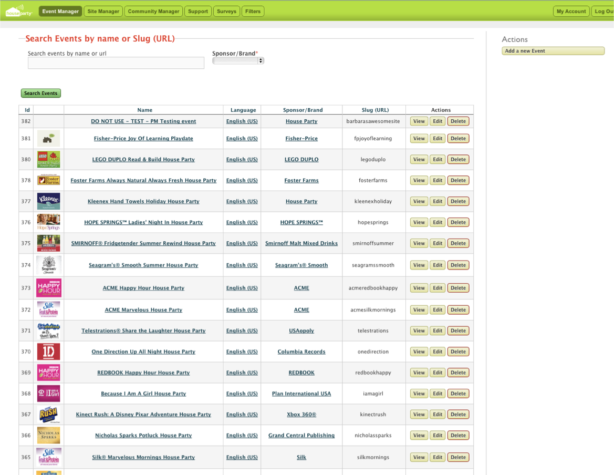
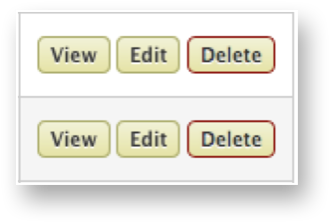
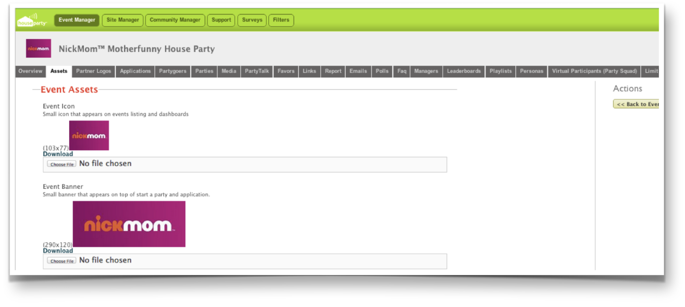
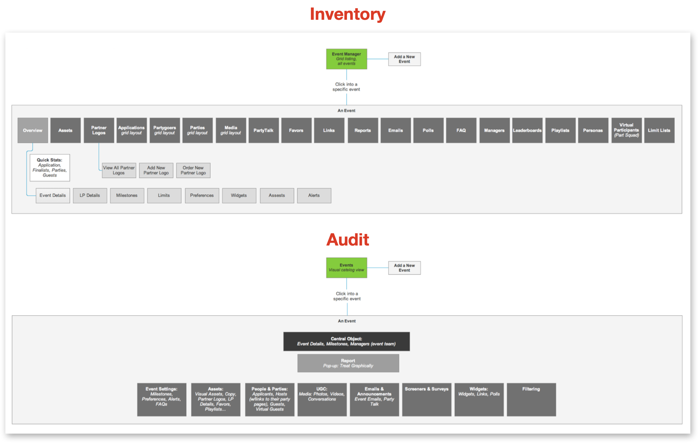
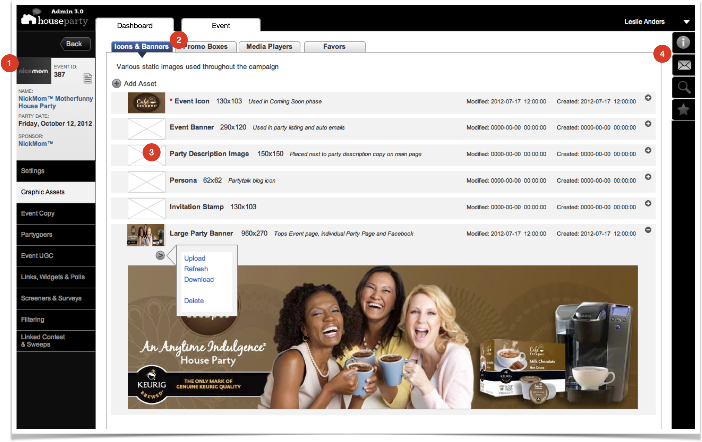
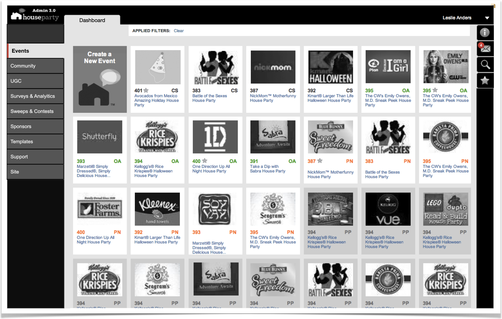

← Back to Case Studies
House Party
Social Media Marketing Campaign Management Platform
A word-of-mouth marketing company, had a platform for art directors and copywriters to gather their assets. It was complicated and unintuitive.

My Roles: UX Researcher / Information Architect / UX Designer
Goals
- Create the wireframes for an end-to-end campaign management system
- Ability to turn the platform outward as a SaaS platform for ad agencies to access
- Design a system that would help users:
- create/manage the needed graphics & copy assets
- assist with deadlines & delivery
- ensure consistency
Challenges
- There was no information hierarchy
- Most potential users feared using the platform and performed their work in a disjointed manner
- Not all steps of a campaign were in the current platform

The background image shows the original primary screen, which had no visual hierarchy. Finding an event was difficult. There was only one level of access; anyone could access the system and delete an entire campaign, which happened more than once. The Event Asset screen is what freelance graphic designers would interface with.
Strategy
- Perform a site audit to understand the current system and its issues
- Interview users to learn their business processes and understand their resistance to working on the platform
- Share design iterations with the users, getting their input and ideas, making it their design, too
- Design a platform with a hierarchy and clear paths to guide users through their process and let technology handle timing, communication, and consistency



Improvements
- "Event Card" retains context for the user as they move the screens of the campaign
- The "order of operations" tabbed layout helps guide users through their tasks
- Leveraged the informal names of the assets and, for extra clarity, provided sizes and descriptions of how they are to be used
- Created Help, Notifications, Search, and Favorites and provided a compact, global placement
Outcome
-
A complete end-to-end solution providing:
- account managers a UI to log new campaigns and provide key dates
- notifications to all department heads
- Past events still needed to be accessed, but the grey tone indicated that the event had already occurred
- Users were able to find events 50% faster
- The original Dashboard displayed only 17 events; the "tile" layout shows users 27


The revised wireframe for the main screen has straightforward navigation to major sections. Event images were 400% larger and easier to find.